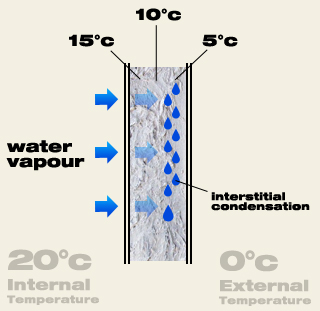

Table of Contents
Logging / Plotting
I think I'm going to go with local storage and plotting for now. Try out Google Charts for now and append data from serial port data using something cross-platform. Java/Python or something…
http://data.sparkfun.com doesn't let you upload past timestamps… and doesn't support timestamps.
BodyTrack plotter looks decent on Fluxtream. Still need to make a connector though.
Plot.ly doesn't let you go back in time, but does have good multi legend support.
I like BodyTrack the best.
Teensy
{kind=link}
3-4 uA of current during LLS or VLLS-3 sleep modes (which includes keeping up RAM and RTC). Good for >100 years on 2 AA batteries. Weird! Teensy Sleep library.
151K of storage. 2 bytes per sensor, 9 sensors, 48 samples per day = 151 days of storage.
Teensy has 151K of program (non-editable) flash, but there is 32K of FlexNVM flash apparently + 2K of RAM. Or just attach an SD card and be done with it…
Time
Need crystal: 300-8303-ND from Digikey. Setting RTC time (on teensy)
Spark Board
Nice option to make the project wireless for $19. Hardware details. 2MB SPI flash module.
Sensors
HTU21D-F
- Took about 5 minutes for temperature sensor to warm up to mouth conditions, which was 36.5°C and 95% relative humidity. The humidity sensor seemed a lot faster
Adafruit Humidity Temperature Sensor HTU21D-F
Apparently there are combo temperature and humidity sensors…
Addition to Oregon code regarding rain drain spacing and drainage efficiency requirement of 75%.
Teensy app.
TMP36 is quite noisy compared to a potentiometer! Consider adding a .1uF capacitor to ground to smooth it out a bit? Read datasheet
Plotting
On web, maybe use Square's Cubism and log data using Graphite.
Still don't understand
dew point / when breathing on something stops condensing (>150F, >212F? in my tests on a heated pan)
- When does breath condense? –> At what temperature does water vapor form visible tiny droplets? When do they get big enough to overcome gravity?
The main problems can be described simply:
- Relative humidity is a
badhorrible metric.- Dew point is better for comfort, but can hot air “hold” more water?
- Fun fact: Our lungs and their Alveoli nearly instantly heat and saturate inhaled air with water because of the huge total surface area…wait for it… 70m2 (the area inside the 3 point line in basketball)! So the air we output is about 95°F and 95% RH, or a dew point of 93°F. 95% RH not because our alveoli aren't capable, but because there are a few salt ions dissolved in our “water” trap the water molecules, which lowers the saturation vapor pressure and prevents total saturation. Sciencebits!
- Air Barrier
- An inflated latex balloon is a good example. Untie the end, and air quickly flows out, that's a lack of an air barrier. However, if the end is tied, the inside air eventually seeps out through the latex through diffusion. One can wrap the outside of the balloon with a more molecularly dense material, and the diffusion will slow/stop accordingly.
- Vapor/Diffusion Barrier/Retarder: The more molecularly dense a material is, the more difficult it is for molecules to diffuse through it?? (intelligent guess). A high perm rating >(means it is easy for water molecules to permeate.
- Surprisingly, a cheap thin sheet of aluminum foil allows no H2O diffusion to occur but it has no structural “strength” because it is so thin. That is why it is often placed on the back of sheet rock or insulation to act as a vapor barrier.
- Temperature Barrier: Gas > Liquid > Solid in terms of blocking energy transfer by pure conductance??!?!, which makes sense.
- Bulk fluid flow is not diffusion!
- What makes a good temperature barrier?
- “Bulky materials resist conductive and – to a lesser degree – convective heat flow in a building cavity. Rigid foam boards trap air or another gas to resist conductive heat flow.” energy.gov
- Time constant is generally Fick's_Law, but when other particles are involved, you need things like Knudsen_Diffusion, as mentioned in a paper measuring soil moisture content using a “Dusty Gas Model”
- Radiant Barrier: sort of a subset of temperature barrier, but more “reflective” materials will bounce “light” better, even when it is visibly dark
 . Black_body_radiation
. Black_body_radiation
You looked at Healthy House Building for the New Millenium, which referenced the Moisture Control Handbook for this section. Reference sources for density/porosity/specific heat capacity/thermal conductivity/water vapor diffusion resistance factor/reference water content/free water saturation/water absorption coefficient from WUFI derived from ASHRAE 1018-RP
Conclusions
- Place vapor barrier on the typically warmest side of the building envelope, as that side will have more dissolved moisture?!?! are we sure? and will condense the water “out” as it cools down. The cool side will have already condensed out the water it had, so there's no need to block out its moisture. it will “hold” more water?!?! and when it is cooled,
Simulators
A great list here: Building Energy Software Tools Directory. Another doc
In the end it's just a bunch of partial differential equations….
EnergyGauge USA, BEopt, and others rely on the DOE toolkit. Evidenced at Comparison of the ENERGYGAUGE USA and BEopt. I can't find the humidity plots over time…Manual says you should be able to though…
WUFI
Maybe simulate with Modelica?? Or figure out the final equations for n layers for 1D and plot with Javascript solver. 1D Heat Transfer example in Modelica. The next example (however, the examples don't work / finish? More at Simulating Stuff
Design presentation}. Quite a few details, including the need to solve numerically probably based on HVAC system…
Seems like they do bulk air transport based on illumination and etc.
Has really handy WUFI-bio based on sedlbauer2001.pdf and sedlbauer200n.pdf (which derives fungi growth at temperatures and humidities, leading to 28%-ish moisture content figure). However bio unit only does inner-most wall, which won't work for tracking fungi growth in interstitial cavities.
We bought 15 TMP36 sensors (voltage output!) and 4 of HTU21D-F Breakout Board (temperature and humidity, calibrated!, in one small sensor).
Evaporation
Wikipedia Accelerated with surface area (felt), enthalpy of vaporization (trying to figure out why isopropyl alcohol is faster than water).
Contrail
Contrail, the clouds that are produced from the tail end of a plane.
- Generally it's from the hot water vapor exhaust from the gas engines, who generally output CO2 and water vapor. (wow, didn't know that). But sometimes it's from vortices…still don't get that one.
Decent implementation paper is Long-Term Performance Monitoring of Hardwood Timber Bridges in Pennsylvania. Doesn't go into theory, but it's one implementation.
Look at Sensors Handbook instead.
Fungi
Not sure if we need this, but I am suspicious of the 28% figure and it's nice to know fungi growth without visible degredation.
One “washes off” Glo Germ and sees if it still remains after washing under UV light. Uses zinc sulfide / plastic particles??(from their MSDS) that fluoresce when under UV light.
{kind=link}
Humidity
Theory
Sense water “dissolved”?? in air, not suspended. Also, condensation is weird too…more to come.
Circuit
Calibration
Go from 0 and 100+%RH and match up the curve?
- What should the curve look like?
Humidifier
Humidifier. Fast method is making small water particles that evaporate?!? quickly. Can use spray bottle but is imprecise/non-continuous, another option is a piezo transducer.
Another option is passive evaporation without heating using a porous material (which I still don't get) and a fan to speed up distribution of air.
Calibrated method is to use salt (Sodium Chloride, NaCl) which does some magic and produces a constant value in a reasonable temperature range (see pdf for table. However, many food-grade salts add anti-caking agents and only guarantee >97% NaCl (typical is between 97-99%, see Salt#Edible_salt).
- Not sure how much that affects it yet…pure NaCl isn't that expensive.
Dehumidifier
Temperature
Mr. Zimmerman strongly suggested using Silicon_bandgap_temperature_sensor for sensing temperature due to accuracy and other stuff…
Moisture
Soil_Moisture_Sensor. Conductivity probes degrade over time due to electrolysis, but doing AC helps apparently. Vegetronix sensor measures dieletric constant by “transmission line techniques”, but I wonder how much it varies with soil type and temperature.
How deep can a signal penetrate / measure moisture? Do we need long-term monitoring anyways? Microwave seems like an option.
Datalogging
Hardware
Software
Domes Interstitial Condensation (Dew Point) Sensor
The Basics
We want to use techniques from Aquametry to measure the moisture in building materials. Humidity (water in the air) causes wood to gain moisture, as well as water directly applied to the wood (but it diffuses into the air around it, so just measure humidity?)
- Why doesn't wood grow fungus inside?
- Knowing the Moisture Content (MC) of wood is important because it causes wood to change its size (perpendicular to the grain especially) and allows fungus that eat wood over time to grow.
-
- Surface Mold Growth is not a problem for wood decay. It grows naturally when the MC levels of a piece of wood are between 20 and 28%. Enclosed mold was found to not affect the occupants any more than walking outside. When the mold is exposed, however, it quickly affects quality-of-life for the occupants.
- Wood decay fungi are the main cause of wood decay over time, and require a MC level of >28% (>= the wood fiber saturation point) for more than one week, an adequate supply of oxygen, and a temperature between 32 and 90 F.
- “This corresponds to a relative humidity of > 97%, unless a source of free water is present” (like a window leak or condensation), which provides a steady source of liquid water.
- Can coating the outside of wood with paint stop a supply of oxygen from getting into the wood? (thus eliminating the fungus problem) Probably not, or else they would be doing that a ton. Also, it prevents the wood from breathing as quickly, keeping the MC high
- Apparently one must use “pressure-treated wood approved for ground contact”
- How do the outside temperature and RH passively affect the MC in a chunk of wood?
- Formula at: Wikipedia: Equilibrium Moisture Content. Only on cold, very humid weeks is there a chance of wood decay. Mmmm, sounds like the beach!
- How long does it take a piece of water-soaked wood to dry out? Equivalent question is how long it takes “green” wood to dry out?
- I smell a differential equation for diffusion.
- It takes green wood around a year to dry out Woodgears.ca, another site says 60 days.
- WUFI is a simulation software for such things. Free for non-profit US citizens.
- Forestry study, details what they used to measure humidity, temperature, strain (for bridges), and moisture content (some nails driven into the wood).
Proper House Design
- Another good Google search would be finding a popular article on wood decay and green building / sealed house / blower test and understanding what methods they suggest to get around it.
- Tight houses are better than leaky houses — with a caveat: tight houses without a ventilation system are just as bad as leaky houses with no ventilation system; maybe worse. from GBA article
- It doesn’t take much of a hole in the ceiling of a humid house for the condensation to accumulate as frost. Then, when the sun warms up the black shingle roof, the frost melts, the water falls, “and then you have a ‘roof leak,’ ” Straube says. “Then you call the roofer, and he puts on a new roof, and it doesn’t fix a damn thing because that wasn’t the problem.” It was an air leak.
- Sorta good article. Takes a while to get to the point though.
Sensor Design
- Don't try and undertake understanding everything right now because you think you can come up with a whiz-bang fix. Just make the sensor!
- Electric Moisture Meters for Wood (made in '88 by the US Forestry Service!)
- Probably need to calibrate with an existing MC sensor
- SD Card Adapter + Teensy = $25 per unit, not bad. However, probably don't need the all the space on the SD card. Makes transferring data *a lot* easier though. http://www.pjrc.com/store/sd_adaptor.html
- Interstitial condensation seems to be a non-issue?! http://www.greenbuildingadvisor.com/blogs/dept/musings/are-dew-point-calculations-really-necessary
- Basically, the water never actually builds up in the middle of the wood, it always builds up on the surface of the material because of something to do with pressure.
- On what side of the wall does it build up then?
- Interstitial condensation occurs when a porous wall material accepts internal warm and humid air and encounters air on the outside that is cold (specifically below the dew point). Somewhere in that material the dew point is reached and water starts condensing. 
- If peak sheathing moisture content is above 20%, then you are at an increasing risk for mold
- Interstitial condensation is caused by a temperature change?! I thought it was a specific “dew point” for the environment…
- More to come…
{kind=link}